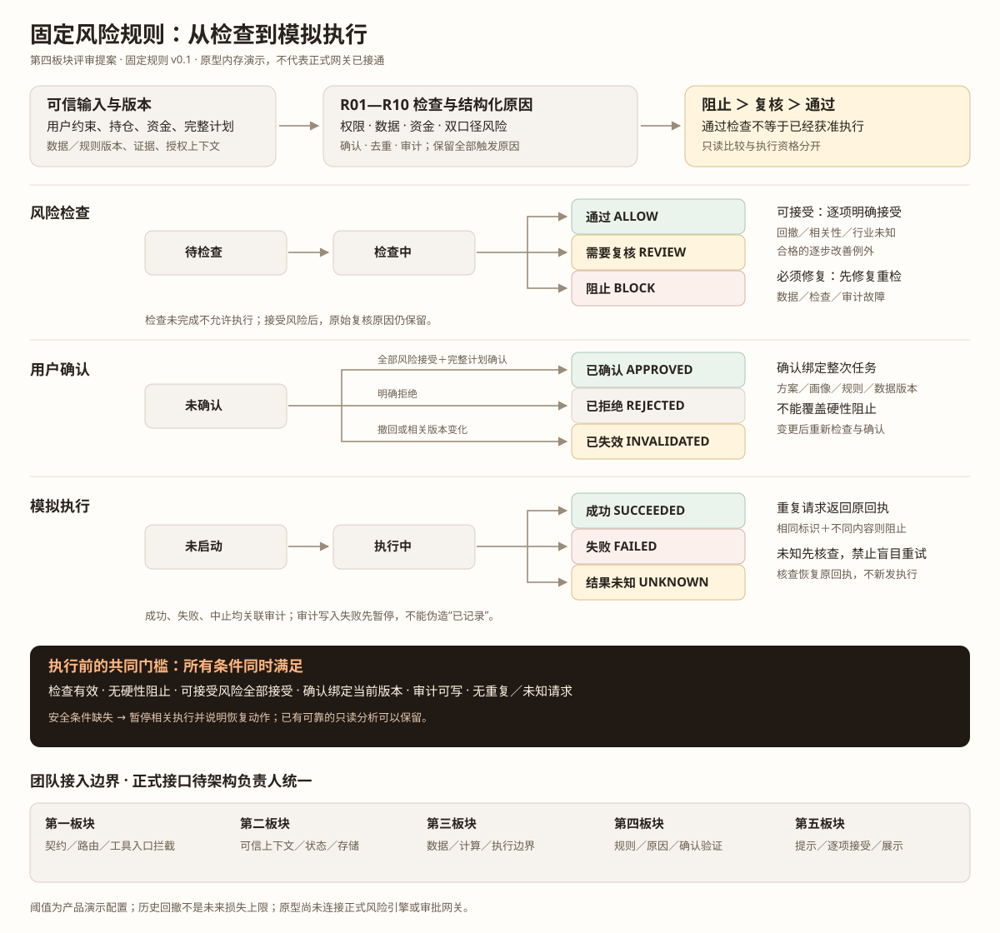

看清边界，再确认模拟。
用固定案例，核对每一条风险规则如何影响下一步。
规则版本 0.1虚构数据 · 固定回放 · 无真实交易未接正式风控／审批网关
这是可交互原型。检查结论来自预设案例，指标来自案例数据；不是正式风险引擎。执行与审计仅在本页内存中演示，刷新即清空。
任务与拟议方案
数据模式固定虚构历史回放
数据时点2026-09-23 · 演示快照
需保留现金
双口径检查
上限为演示配置，超过才触发| 指标 | 占总资产 含现金 | 占投资部分 不含现金 |
|---|
持仓、行业汇总与证据口径
逐条检查结果
用户确认与演示执行
通过检查 ≠ 已获授权演示执行尚未启动
审计关联记录
仅演示内存缓冲，不代表持久化审计。拒绝、失效与中止保留原因；失败写入不能冒充成功。
查看本案例的审计字段
从规则到执行边界
风险结论、用户确认和执行状态分别记录。确认只能接受指定风险，不能覆盖硬性阻止。

正式契约与执行拦截点待团队评审；现有主流程仍停在风控交接点。